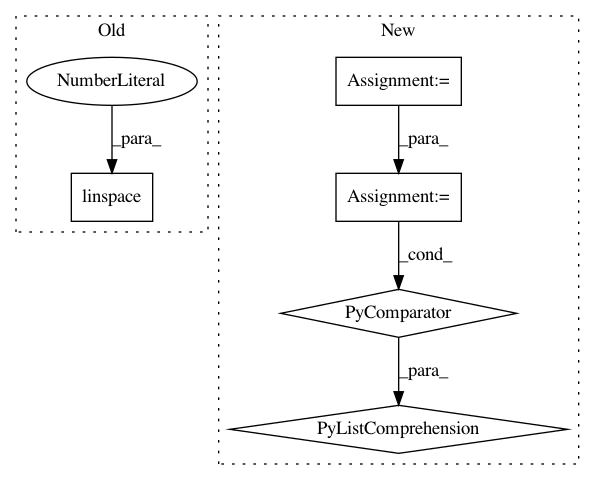

b8f10b387de929bcb250e4750064355e50b44317,examples/plot_gp_minimize_1d.py,,,#,6
Before Change
bounds = [[-5, 5]]
vals = np.reshape(np.linspace(-5, 5, 100), (-1, 1))
subplot_no = 131
for n_iter in [2, 5, 10]:
After Change
from skopt.gp_opt import acquisition
bounds = [[-2, 2]]
x = np.linspace(-2, 2, 200)
func_values = [bench3(xi) for xi in x]
vals = np.reshape(x, (-1, 1))
for n_iter in [10, 20]:
In pattern: SUPERPATTERN
Frequency: 3
Non-data size: 5
Instances
Project Name: scikit-optimize/scikit-optimize
Commit Name: b8f10b387de929bcb250e4750064355e50b44317
Time: 2016-04-18
Author: manojkumarsivaraj334@gmail.com
File Name: examples/plot_gp_minimize_1d.py
Class Name:
Method Name:
Project Name: enthought/chaco
Commit Name: 921f172b639a9cc81b9374f5fed9c31a8a396908
Time: 2009-02-09
Author: warren.weckesser@651a555e-23ca-0310-84fe-ca9f7c59d2ea
File Name: enthought/chaco/scales/scales.py
Class Name: LogScale
Method Name: ticks
Project Name: SheffieldML/GPy
Commit Name: 1a135ca9f7d98f63a3183895f27021308da4d9be
Time: 2013-01-11
Author: james.hensman@gmail.com
File Name: grid_parameters.py
Class Name:
Method Name: